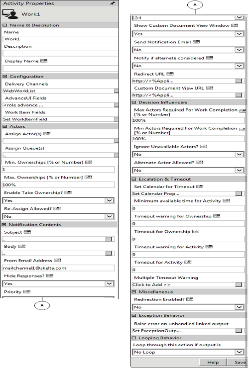

No
Activity Description:
The Work Activity is used in the AVEVA Work Tasks workflow process design in cases where custom activities are required. This activity can be configured using XML configuration files and HTML templates allowing a high degree of flexibility in defining its functionality.
These configuration files are located in the [AVEVA Work Tasks Installed Path]\WorkflowElements\Default\en-US\Actions\WorkAction folder. The Work activity can be configured with Action Outputs, Input Variables, and Output Variables.
Application Scenarios:
A typical application scenario would be a Performance Appraisal Workflow where different user-interfaces will have to be shown to evaluators and those being evaluated. The Work activity with its role-based user-interfaces will help implement this functionality.
Workflow Variables for Work:
Steps to define variables for use in the Work activity
This section describes how to define variables for use in Work activities. It gives the syntax for creating the variables and typical examples for different cases.
Variables for capturing WorkItemIds
The Work Item Id's for the Work work item can be retrieved using a variable of type array, with the following syntax:
'^'+CurrentActivity.Name+'WorkItemIds'.
For example, ^WorkActivityWorkItemIds.
Variables for capturing All Actors' Details
The details of the actor(s) to whom the Work work item gets assigned can be accessed by declaring a variable of type array with the following syntax:
'^'+CurrentActivity.Name+'ActingUsers'
For example, ^WorkActivityActingUsers.
Variables for capturing Responding Actors' Details
The details of the actors' responding to the Work work item can be accessed by declaring a variable of type resource with the following syntax:
'^'+HWSActivity.ActivityName+'RespondingUser'
For example, ^WorkActivityRespondingUser.
This variable stores the responded user information. If it is more than one user, it will retrieve the last user details.
Note: For a single user, you can declare this variable as Resource type. If task is assigned to more than one user and to get all responded users information, then declare this variable as array.
Variables for capturing Comments
Comments entered in a Work work item can be retrieved using a variable with the following syntax:
'^'+_WorkItem.CurrentActivity.Name+'CommentWork'
For example, ^WorkActivityCommentWork.
Variables for assigning queue system variable
To assign queues instead of setting the queue through Assign Queue property, add a variable with a name prefixed by '^', with the following syntax:
"^"+ CurrentActivity.Name + "_QueueVariable".
For example, if the activity name is 'Approval1' then declare the variable as ^Approval1_QueueVariable in the Start activity with the Type as String. Using the "Update Variable" activity, assign the queue-id (GUID) for this variable in the workflow.
To assign multiple queues, specify the queue-ids with semicolon (;) separator. Skelta.HWS.Queue.QueueCollection class can be used to retrieve queue information.
Variable for Queue Acting Users
You can declare an array type variable to get updated information about the name of the actor to whom an activity gets assigned from a queue.
In the Workflow Variables, define the variable in the following format:
^+CurrentActivityName+'QueueActingUsers'
Ex: ^HRFormQueueActingUsers
HRForm is the activity name.
For example the value of the user who acts on the HRForm activity will be stored in the variable. The Approval1 task will be assigned to the same user.
Variable for storing timeout warning value
Suppose if you want to store the timeout warning value for Work activity in your workflow. The naming convention for the system variable to be declared is
^<ActivityName>ResponseByWarningTimeout
The value returned by the variable will be in UTC format. For multiple user scenarios the highest timeout value calculated for a user will be available in the variable.
Note: Multiple timeout warnings cannot be tracked using this feature.
Activity Properties:
The Work activity has to be configured by specifying appropriate values for the different properties in the Activity Properties area. The Activity Properties can be accessed by clicking on the Activity Properties tool in the Tool Bar or by selecting the appropriate option from the right click menu for the Work activity. The Activity Properties are organized under the following groups of related properties. The properties under each group are described in this topic.

Name & Description
The properties in the Name & Description group have been described below. You can use these properties to specify the name and description for the activity.
Name - This property can be used to specify a name for the activity.
Property Type: Optional (This property needs to be set only if necessary.)
Description - This property specifies a brief description to be displayed for the activity.
Property Type: Optional (This property needs to be set only if necessary.)
Display Name - This property specifies name to be displayed for the activity in the Work Item List.
Property Type: Optional (This property need not be set if the display name is already configured in the Actions.xml. The name entered here overrides any display name that is configured for this activity in the Actions.xml file.)
Configuration
The properties in the Configuration group have been described below. You can use these properties to configure the functionality of the activity.
Delivery Channels - This property is used to specify the delivery channels to deliver this activity to the assigned actor(s). Multiple channels can be specified giving the actor(s) different options to act on the work item.
Property Type: Optional (This property needs to be set only if necessary.)
Steps to set the Delivery Channels property
See Work - Delivery Channel for a detailed description of the Delivery Channels property window.
AdvanceUI Fields - The property is used to specify the advance UI fields of the Work activity. These fields, which define the Work activity, include the input variables, activity outputs and output variables. In addition, the AdvanceUI template can be specified along with the GroupUI template. The Work activity can be configured to be Role-based or Non-Role-based with the Role-based version allowing the flexibility of exposing different sets of fields according to the role selected. To assign activity outputs, click the 'AdvanceUI Fields' button in the Properties pane for the Work activity. A new window pops up. In this window, specify whether the activity will be Role-based or Non-Role-based using the radio buttons provided, and proceed to specify the UI fields in subsequent windows.
Property Type: Mandatory (This property must be set for the action to be used in the workflow.)
Steps to set the AdvanceUI Fields property
See Work - AdvanceUI Fields for a detailed description of the AdvanceUI Fields property window.
Work Item Fields - This property is used to add the Work Item Fields to be used to display application data as well as value in variables and content in the Work Item List when this action is executed.
Property Type: Optional (This property needs to be set only if necessary.)
Steps to set the Work Item Fields property
See Work - Work Item Fields for a detailed description of the Work Item Fields property window.
Actors
The properties in the Actors group have been described below. You can use these properties to specify the actors who will work on the activity and related properties.
Assign Actor(s) - This property specifies the actor(s) who has to take up the Work activity. It is tagged with the Ignore Unavailable Actors property which in turn is tagged with Alternate Actor Allowed. This will be explained in detail later.
Property Type: Mandatory (This property must be set if the activity is to be assigned to any resource(s).)
Steps to set the Assign Actor(s) property
Add the condition to the expression by clicking Add. This will display the expression to the text area.
You can remove a condition already added to the expression by clicking Undo.
You can also clear an existing expression if necessary by clicking Clear. This is useful if you want to clear large expressions in the text area in order to build a new expression.
After building the expression, click Update to save it.
See Work - Assign Actor(s) for a detailed description of the Assign Actor(s) property window.
See the Using XML Variables section in the About XML Variables topic for details on how to use the XMLVariables to build the expression.
Assign Queue(s) - This property specifies the queue(s) to which the Task activity is to be assigned.
Property Type: Mandatory (This property must be set if the activity is to be assigned to any Queue(s).)
Steps to set the Assign Queue(s) property
See Work - Assign Queue(s) for a detailed description of the Assign Queue(s) property window.
Min. Ownerships [% or Number] - This property, which can be specified as a number or percentage, is the minimum number of actors who should take ownership of the Work assignment. This property is related to the 'Timeout warning for Ownership' and 'Timeout for Ownership' properties. To illustrate, when 'Timeout for Ownership' is reached, the activity first checks if the ownership count is less than Min.Ownerships (if it is set). If it is, the work item will be removed from all Work Item lists. If the 'Min.Ownerships' has already been satisfied, then the work item will be removed from the Work Item lists of those who have not taken ownership. If the Min.Ownerships value is 0, then the activity checks if the ownership count is less than Max.Ownerships (if it is set). If it is, the work item will be removed from all Work Item lists. Else the work item will be removed from the Work Item lists of those who have not taken ownership. If both Min.Ownerships and Max.Ownerships are set to 0, then there should be at least one actor taking ownership within the set time, otherwise the work item will be removed from all Work Item lists.
Property Type: Optional (This property needs to be set only if necessary. It is useful in group response scenarios.)
Max. Ownerships [% or Number] - This property, which can be specified as a number or percentage, is the maximum number of actors who should take ownership of the Work request. If 'Timeout for Ownership' is specified and achieved, and the 'Min.Ownerships' is also satisfied, then the activity waits for action from those who have taken ownership. If the Min.Ownerships value is set to 0, then it checks if the ownership count is less than
Max.Ownerships. If it is, the work item will be removed from all Work Item lists. Else the work item will be removed from the Work Item lists of those who have not taken ownership. If both Min.Ownerships and Max.Ownerships are set to 0, then there should be at least one actor taking ownership within the set time, otherwise the work item will be removed from all Work Item lists. Property Type: Optional (This property needs to be set only if necessary. It is useful in group response scenarios.)
Property Type: Optional (This property needs to be set only if necessary.)
Enable Take Ownership? - If this property is set to Yes, then the actor is provided with a Take Ownership option in the Work items list to take ownership of the task. If you do not not required the Take Ownership option in the Work items list, then set this property as No.
Property Type: Optional (This property needs to be set only if necessary.)
Note: By default, this property is set as Yes.
Steps to set the Enable Take Ownership? property
Re-Assign Allowed? - If this property is set then the actor is provided with a Re-Assign option. Using this the actor can forward the work item to another actor.
Property Type: Optional (This property needs to be set only if necessary.)
Notification Contents - The properties in the Notification Contents group have been described below. You can use these properties to specify the content used to notify actors about the activity.
Subject - This is the subject of the Work assignment. The subject can be customized for each actor.
Property Type: Optional (This property need not be set. If it is not set, the default subject line from the Actions.xml file is displayed.)
Steps to set the Subject property
See Work - Subject for a detailed description of the Subject property window.
Body - This is the actual message of the Work sent to the actors. The message body can be customized for each actor. There is an Enterprise Console Explorer(plug-in) icon in the Body property window to get the Work item details URL. See Enterprise Console Control (EC Plug-in) for more information.
Property Type: Optional (This property need not be set.)
Steps to set the Body property
See Work - Body for a detailed description of the Body property window.
From Email Address? - This property is used to specify the email address from which notification messages will be sent for the activity.
Property Type: Optional (This property needs to be set only if necessary. If it is not set, the default value in Activities.xml will be used.)
Hide Responses? - If this property is set to 'No', then actors can see the responses of other actors in a group Work scenario. To view these responses i.e., ownerships, Works or rejections, select the 'Take Ownership' button. This will open a new pop up with the responses of other actors who have taken ownership.
Property Type: Optional (This property needs to be set only if necessary. It is useful in group response scenarios.)
Priority - This property is set to indicate the priority of the Work assignment. Enter the values 0-33 to set as Low, 34-66 for Medium, or 67-99 for High. The default value is set to 34.
Property Type: Optional (This property needs to be set only if necessary.)
Send Notification Email - If this property is set to 'Yes', then notification emails will be sent to the actors. If it is set to 'Yes-HTML', then the emails will be sent in HTML format.
Property Type: Optional (This property needs to be set only if necessary.)
Notify if alternate actor is considered - If this property is set to 'Yes', then notification emails will be sent to the actors when an alternate actor is considered.
Property Type: Optional (This property needs to be set only if necessary.)
Redirect URL - This property is used to get the URL of the web page to redirect the client to, in the case of synchronous execution of the activity.
Property Type: Optional (This property needs to be set only if necessary.)
Steps to set the Redirect URL property
See Work - Redirect URL for a detailed description of the Redirect URL property window.
Custom Document View URL - This property is used to get the URL of the page to which the custom document dlls does a post. The data posted to the page are application, workflow, executionid, executiondetailsid, and workitemid. The posted data can be retrieved as Request.Form["workitemid"].
Property Type: Optional (This property needs to be set only if necessary.)
Steps to set the Custom Document View URL property
See Work - Custom Document View URL for a detailed description of the Custom Document View URL property window.
Decision Influencers
The properties in the Decision Influencers group have been described below. You can use these properties to specify some parameters that influence the outcome of the activity.
Max Actors Required for WorkAssignment Completion [% or Number] - This property is used to check what percentage or number of actors should take an action for Work. Decision on the Work is taken only after the specified number or percentage of resource(s) have taken the action. The activity waits for the actors' action until the 'Timeout for action' is reached.
Property Type: Optional (This property needs to be set only if necessary. It is useful in group response scenarios.)
Min Actors Required for WorkAssignment Completion [% or Number] - This property specifies the minimum number of actors to act on the Work before the 'Timeout Warning for Action'. If the action limit is reached before the 'Timeout Warning for Action' then the warning message is not shown.
Property Type: Optional (This property needs to be set only if necessary. It is useful in group response scenarios.)
Ignore Unavailable Actors? - If this property is set to 'No', when the Work activity is assigned to the actors list a check is first done to see whether the actor is available. If the actor is not available then a check is made for an alternate actor assigned to the unavailable actor. Simultaneously, the value of the property 'Alternate Actor Allowed' is checked. If that is also set, then the Work is assigned to this actor.
Property Type: Optional (This property needs to be set only if necessary.)
Alternate Actor Allowed? - This property is set to assign a particular Work to an alternate actor in the absence or unavailability of any actor.
Property Type: Optional (This property needs to be set only if necessary.)
Escalation & Timeout
The properties in the Escalation & Timeout group have been described below. You can use these properties to specify escalation and timeout settings for the activity.
Set Calendar for Timeout - This property is used to specify the calendar to be used to determine activity timeouts.
Property Type: Optional (This property needs to be set only if necessary.)
Steps to Set Calendar for Timeout
See Work - Set Calendar for Timeout for a detailed description of the Set Calendar for Timeout property window.
Minimum available time for Activity - This property is used to check the availability of an actor to whom a task must be assigned while executing the activity. The availability check for the actor is done based on the Calendar settings (Global or Resource Calendar). If the time taken to complete the task is within the value set for the Minimum available time for Activity property, then the task will be assigned to that actor. However, if the time taken to complete the task exceeds the value set for the Minimum available time for Activity property, then the task will be assigned based on the values set for the Ignore Unavailable Actors? and Alternate Actor Allowed? properties.
Property Type: Optional (This property needs to be set only if necessary.)
Timeout Warning for Ownerships - This property specifies the time at which a warning is provided to a actors to take ownership of the work item assigned to him/her. If the actors do not take ownership within this time the engine is notified with a warning. Thus if 'Min.Ownerships' is set, and it is not satisfied before the given time then a warning is sent. If Min.Ownerships is 0, it will check for Max.Ownerships. If the ownership count does not reach the Max.Ownerships value within the set time, a warning is sent. If both Min.Ownerships and Max.Ownerships are not set, this property is ignored.
Property Type: Optional (This property needs to be set only if necessary.)
Timeout for Ownerships - This property specifies the time until which actors are allowed to take ownership, i.e. the time until which the Work activity will wait for actors to take ownership. If Min.Ownerships is set and is not reached, the work item is removed from all work item lists. If Min.Ownerships is 0, it will check if ownership count is less than Max.Ownerships. If it is, the work item is removed from all work item lists. Else the work item will be removed from the work item lists of those who have taken ownership. The work item will remain in the work item list of those who have taken ownership and wait for action from them.
Property Type: Optional (This property needs to be set only if necessary.)
Understand how Ownership Properties relate to each other:
Property Type: Optional (This property needs to be set only if necessary. It is useful in setting escalations.)
Timeout for Activity - This property's value is used to decide until what time the activity should wait for the actors' action. If properties such as Max.Ownerships, AAA, AL are set, once the property values are reached the work item is removed from the work item lists of all the actors. When the timeout is reached, the following checks are made: If AL is set, when the action count i.e. the no. of Works or rejections (AC) < AL, then the timeout for action is performed and the work item is removed from all work item lists. If AC > AL, it checks with the no. of Works or 'decision count' (DC) and AAA. If DC >= AAA (if it is set), the activity is considered approved; otherwise, it is rejected. If AAA = 0 and if DC >= AL, the action is considered completed. If AL = 0 and AC < AAA, then the timeout for action is performed and the work item is removed from all work item lists. If AL = 0 and AC > AAA, it will check with DC. If DC > AAA it is completed. If AL = 0 and AAA = 0, then if DC is at least 1, then it is considered completed.
Property Type: Optional (This property needs to be set only if necessary. It is useful in setting escalations.)
Multiple TimeOut Warning - This is used to set recurring timeout warnings that will be sent to the actors who have to take action. To set multiple timeout warnings, click the 'Multiple TimeOut Warning' button in the Properties pane for the Work activity. A new window pops up. In this window, set the interval for the recurring warning as well as the output message. You can also set the Recurring Time Interval. This can be used to set a different recurring time out after the first timeout happens. For example, if 'Time Interval' for the property is set as 7 days and 'Recurring Time Interval' is set as 2 days, then the first time out will happen after 7 days and there will be a recurring time out every second day after the seventh day (first) time out.
Property Type: Optional (This property needs to be set only if necessary. It is useful in setting escalations.)
Steps to set the Multiple Timeout Warning property
See Work - Multiple Timeout Warning for a detailed description of the Multiple TimeOut Warning property window.
Looping Behavior
The property in the Looping Behavior group has been described below. You can use this property to specify the looping behavior of the activity. Loop through this action if output is - This property is used to specify the condition for looping the activity by selecting an activity output from the drop down.
Property Type: Optional (This property needs to be set only if necessary.)
Miscellaneous
Redirection Enabled? - This property enables redirection. When this property is set to Yes, the workflow redirects the user to the URL in the Redirect URL property in the next activity.
Activity outputs: The Work Activity returns the following values -
Action Completed: Displayed when all the actors have taken part.
Action Completed Affirmative Percentage Not Reached: Displayed when all the actors have not taken part.
Not Enough Resources to Take Acknowledge: Displayed when the filter condition did not yield enough actors to whom the request can be sent.
Timeout - Take Acknowledge: Displayed when the specified minimum number of actors did not take ownership of the request in the given time.
Timeout - Action: Displayed when some or all of the specified actors did not perform the required action in the given time.
Timeout Warning - Take Acknowledge: Displayed when a warning is generated that the specified minimum actors have not taken ownership of the request in the given time.
Timeout Warning - Action: Displayed when a warning for timeout is generated because some or all the actors did not perform the required action in the given time.
Note: The following outputs will return only if user assigned tasks to a queue user.
Resource Unavailable for Queue - If a queue is assigned to a task & if there are no resources available in the queue then this output will get triggered.
TimeOut for Queue Task - This output will get triggered when the task in the queue is not picked by any users within the queue escalation time resulting the completion of that task.
Timeout Warning -Queue - This output will get triggered when the task in the queue is not picked by any users within the queue escalation time resulting in sending a warning out put. However, the task will still be sleeping.
Timeout Warning -Queue Participant - This output will get triggered when the task in the queue is picked by user but still not acted on that task within the queue escalation time out settings resulting in triggering a warning output. However, the task will still be sleeping.
Exception Behavior
Each activity has the Raise Error on Unhandled Linked Output property on click of which, it shows all the default configured mapped error outputs in red with their check boxes selected.
See Mapped Error Outputs for more details.